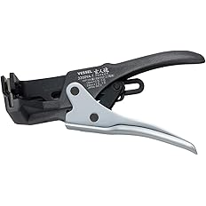

向いている人
- VA線・細線・外被剥きを使い分けたい人
- 芯線を傷める失敗を減らしたい人
- 最初の1本と追加工具の順番を決めたい人
ストリッパー選びで多い失敗は、太線向けの工具で細線を剥いてしまうことです。見た目は剥けていても、芯線に傷が入ると後から不安が残ります。
VA線、IV線・制御線、ケーブル外被、LANケーブルでは、剥きたい場所も必要な力加減も違います。だから、1本で全部を完璧にするより、用途で分ける方が仕上がりが安定します。
まず1本なら3500E-3。細線が多いなら3500E-2を追加。外被剥きが多いならND-800。VA線を毎日触るなら3200VA-1、LAN加工があるならE-3508という順で考えると選びやすいです。

先輩ストリッパーは、1本で全部やるより線の種類で分けた方が失敗しにくいよ。

新人VA線も細線も同じ工具で剥けるなら、それでいいのかと思ってました。
先輩剥けることと、芯線を傷めにくく安定して剥けることは別だね。細線は特に専用寄りに分けると安心だよ。
最初に、どの作業が多いかを決めます。用途が決まると、選ぶべきモデルもかなり絞れます。
まず1本なら3500E-3。VA線や日常的な配線作業に使いやすく、M4ねじカッター付きなのも便利です。
ライトカーテンやエリアセンサーなどの細線なら3500E-2。芯線ダメージを減らしたい時に向いています。
外被剥きが多いならND-800。刃の深さ調整ができると、ケーブルに合わせて作業しやすいです。
VA線を毎日剥くなら3200VA-1、LAN加工ならE-3508。専用工具は反復作業で効率が出ます。
「とりあえず剥けた」で進めると、芯線の細かい傷や外被の切り込みが残ることがあります。仕上がりに不安があるなら、工具を用途で分ける方が安心です。
6モデルは順位だけで見るより、用途で分けた方が選びやすいです。
| モデル | 主な用途 | 特徴 | 向いている人 |
|---|---|---|---|
| 3500E-3 | VA線・普段使い | M4ねじカッター付きで1本運用しやすい | まず1本で幅広く使いたい人 |
| 3500E-2 | IV線・細線・制御線 | 細線の仕上がりを安定させやすい | センサー配線や制御線が多い人 |
| ND-800 | ケーブル外被剥き | 刃の深さ調整で外被剥きに強い | ケーブル外被剥きが多い人 |
| LS55 | 定番比較枠 | 現場で見かけやすい定番候補 | 候補を広く比較したい人 |
| 3200VA-1 | VA線専用 | 反復作業で手数を減らしやすい | VA線作業が多い人 |
| E-3508 | LANケーブル外被 | LAN加工時に外皮を安定して剥きやすい | LANの頭を作る作業がある人 |
最初の1本は3500E-3。細線が多いなら3500E-2を足す。外被剥きが多いならND-800を足す。VA線が多いなら3200VA-1、LAN加工があるならE-3508を追加する流れが分かりやすいです。
現行記事の商品画像とAmazonリンクを維持して、用途別に整理しています。

1本で幅広く使いたい人に向く、普段使いの基準にしやすいストリッパーです。
VA線を含む日常的な配線作業で使いやすく、M4のねじカッター付きなのも現場では便利です。
細線専用や外被専用まではまだ不要だけど、まず失敗しにくい1本が欲しい人に向いています。
最初の1本を選びたい人、VA線や普段の配線作業が多い人、ストリップだけでなく軽い加工まで1本でつなげたい人に向いています。

ライトカーテン、エリアセンサー、制御線などの細線作業に向いたストリッパーです。
細い線は芯線ダメージが不安になりやすいため、細線作業が多い人は専用寄りで分けておくと安心です。
VA線中心なら3500E-3や3200VA-1が先ですが、細線が多い人は3500E-2を軸に考えると失敗しにくいです。
制御線や細い配線を扱う人、ライトカーテンやセンサー配線が多い人、芯線を傷める不安を減らしたい人に向いています。

ケーブル外被剥きの比率が高い人に向くストリッパーです。
刃の深さ調整ができるため、ケーブルに合わせて外被を剥きやすく、無理に力を入れずに作業しやすくなります。
芯線処理までこれ1本で済ませるというより、外被はND-800、芯線は3500E-2や3500E-3に分けると安定します。
ケーブル外被剥きが多い人、刃の深さを調整して手戻りを減らしたい人、外被専用の工具を分けたい人に向いています。

定番モデルも含めて比較したい人向けの候補です。
自分の用途が細線や外被で明確なら、3500E-2やND-800を先に選んだ方が早いですが、広めに比較するなら見ておきたいモデルです。
現場で使っている人を見かけやすいので、情報を集めながら選びたい人にも向いています。
定番としてよく使われている物を候補に入れたい人、ロブテックス系の工具を使うことが多い人、比較対象を増やしたい人に向いています。

VA線作業が多い人向けの専用ストリッパーです。
VAケーブルをよく扱うなら、専用タイプの方が手数を減らしやすく、反復作業で効率を出しやすいです。
VA線がたまにしかないなら3500E-3で十分な場面もありますが、毎日のように触るなら追加する価値があります。
VA線作業が多い人、作業スピードを上げたい人、専用工具で効率よく進めたい人、VAケーブルをよく扱う人に向いています。

LANケーブルの外皮を剥く作業に向いた専用工具です。
LANの頭を作る時、カッターで外皮を剥くこともできますが、芯線を傷つけるリスクがあります。専用工具を使うと仕上がりを安定させやすいです。
LAN加工をする機会がある人は、圧着工具やLANチェッカーと合わせて見ておきたい工具です。
LANケーブル加工をする人、外皮剥きで芯線を傷つけたくない人、LANの仕上がりを安定させたい人に向いています。
最初から6本をそろえる必要はありません。作業内容に合わせて、必要な順に足していくと無駄が少ないです。
3500E-3。VA線や普段の配線作業に使いやすく、最初の基準にしやすいです。
3500E-2。センサー配線や制御線で、芯線を傷める不安を減らしやすいです。
ND-800。刃の深さ調整ができる外被向け工具を分けると作業が安定します。
VA線は3200VA-1、LAN加工はE-3508。反復作業なら専用工具の効率が出ます。
新人まず3500E-3を基準にして、細線が多ければ3500E-2、外被が多ければND-800を足す感じですね。
先輩うん。毎日VA線を触るなら3200VA-1、LAN加工をするならE-3508を追加。作業が決まってから足すと無駄が少ないよ。
ストリッパーは被覆を剥くための工具です。切る・削る・圧着する工具とは役割を分けて考えます。
細線や結束バンドを切る工具です。被覆剥きの代用にすると芯線を傷めやすい場面があります。
太物や現場合わせの被覆処理に使います。細線の安定処理はストリッパーの方が楽です。
端子を正しく圧着する工具です。被覆剥き後の接続品質に関わるので、ストリッパーとは分けます。
LAN加工後に配線順や導通を見る工具です。E-3508で外皮を剥いた後の確認に使います。
工具は代用できる場面もありますが、毎回同じ作業をするなら専用工具の方が安定します。特に細線・外被・LAN加工は、専用寄りに分けると失敗を減らしやすいです。
※当サイトはAmazonアソシエイト・プログラムに参加しており、適格販売により収入を得ています。